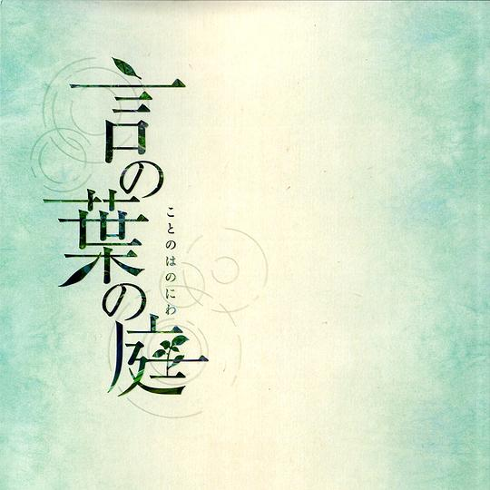

2014-04-30 00:28:46
看过  危机解密 / The Fifth Estate
危机解密 / The Fifth Estate
2014-04-26 20:17:57
看过  纸牌屋 第二季 / House of Cards Season 2
纸牌屋 第二季 / House of Cards Season 2
2014-04-19 00:17:06
收藏图书到豆列
2014-04-19 00:08:45
收藏图书到豆列
百科全书导论
2014-04-19 00:07:28
收藏图书到豆列
2014-04-19 00:05:28
收藏图书到豆列  揭秘数据解密的关键技术
揭秘数据解密的关键技术
做游戏汉化的建议阅读 lol
2014-04-19 00:03:50
收藏图书到豆列  Windows核心编程(第5版)
Windows核心编程(第5版)
刘云彬后面是这本。
2014-04-19 00:03:00
收藏图书到豆列
网上推荐王爽后面是刘云彬
2014-04-19 00:01:58
收藏图书到豆列
2014-04-17 22:26:16
收藏图书到豆列  汇编语言（第2版）
汇编语言（第2版）
2014-04-17 17:41:36
读过 汇编语言（第2版）
2014-04-13 22:01:50
听过  One more time,One more chance 「秒速5センチメートル」Special Edition
One more time,One more chance 「秒速5センチメートル」Special Edition
2014-04-13 21:24:51
听过  The Legend of 1900
The Legend of 1900
2014-04-13 21:21:53
听过  Nuovo Cinema Paradiso
Nuovo Cinema Paradiso
2014-04-13 21:18:44
听过  클래식 Original Soundtrack
클래식 Original Soundtrack
2014-04-13 21:17:43
听过 
言の葉の庭 サウンドトラック
2014-04-13 13:11:09
看过  寒蝉鸣泣之时·扩 / ひぐらしのなく頃に 拡 〜アウトブレイク〜
寒蝉鸣泣之时·扩 / ひぐらしのなく頃に 拡 〜アウトブレイク〜
2014-03-30 22:11:30
看过  纸牌屋 第一季 / House of Cards Season 1
纸牌屋 第一季 / House of Cards Season 1
2014-03-23 16:37:42
看过  辛德勒的名单 / Schindler’s List
辛德勒的名单 / Schindler’s List
2014-03-12 01:16:49
看过  社交网络 / The Social Network
社交网络 / The Social Network
2014-03-11 21:19:24
读过  Fedora 12 Linux应用基础
Fedora 12 Linux应用基础
2014-03-09 20:10:07
在读
2014-03-09 20:00:31
看过  穿越时空的少女 / 時をかける少女
穿越时空的少女 / 時をかける少女
2014-03-08 22:53:11
看过  空之境界 未来福音 / 劇場版 空の境界 未来福音
空之境界 未来福音 / 劇場版 空の境界 未来福音
2014-03-04 20:56:51
看过  小小克星！Refrain / リトルバスターズ！〜Refrain〜
小小克星！Refrain / リトルバスターズ！〜Refrain〜
2014-01-26 02:06:53
 交错†频道 CROSS†CHANNEL
交错†频道 CROSS†CHANNEL
诶？竟然搜到了。。。不得不佩服豆瓣了，好吧，这部作品文学价值不见得多高，但是哲学、社会学内涵丰富，我呢正在参与这部作品的汉化，大家支持啦、、、
2014-01-21 21:59:11
读过  麦田里的守望者
麦田里的守望者
2014-01-21 21:53:36
读过  人间失格
人间失格
2014-01-21 21:31:49
读过  C++类和数据结构
C++类和数据结构
2014-01-21 21:28:25
读过  C++轻松入门
C++轻松入门
2014-01-20 23:57:53
喜欢小组讨论：
2014-01-16 21:53:24
看过  谍影重重2 / The Bourne Supremacy
谍影重重2 / The Bourne Supremacy
2014-01-14 23:32:19
看过 谍影重重 / The Bourne Identity
2014-01-11 14:04:03
喜欢日记：
2014-01-10 23:03:31
看过  恐怖直播 / 더 테러 라이브
恐怖直播 / 더 테러 라이브
2014-01-10 22:57:54
在读 Windows核心编程(第5版)
2014-01-10 22:56:49
在读  算法导论（原书第3版）
算法导论（原书第3版）
 年度之战：梦之队 / Battle of the Year: The Dream Team
年度之战：梦之队 / Battle of the Year: The Dream Team 蝴蝶效应2 / The Butterfly Effect 2
蝴蝶效应2 / The Butterfly Effect 2 饥饿游戏2：星火燎原 / The Hunger Games: Catching Fire
饥饿游戏2：星火燎原 / The Hunger Games: Catching Fire AURA～魔龙院光牙最后的战斗～ / AURA ～魔竜院光牙最後の闘い～
AURA～魔龙院光牙最后的战斗～ / AURA ～魔竜院光牙最後の闘い～ 蝴蝶效应 / The Butterfly Effect
蝴蝶效应 / The Butterfly Effect 乔布斯 / Jobs
乔布斯 / Jobs